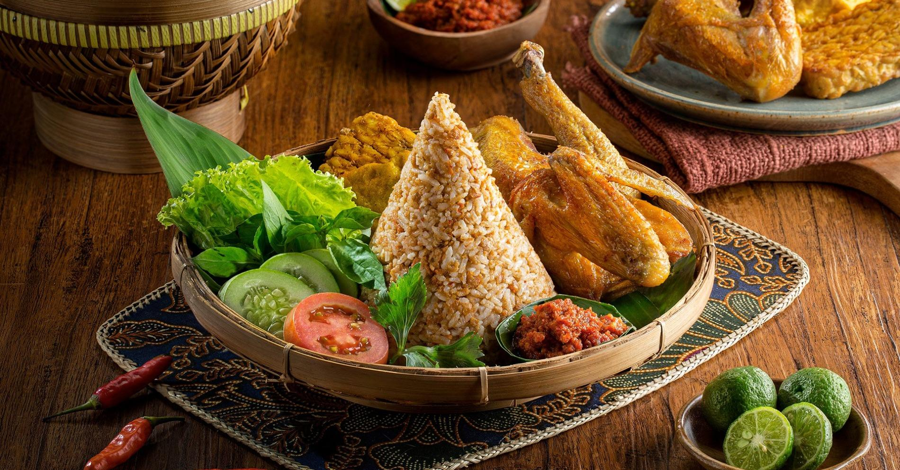

';">Nasi Tutug Oncom atau yang dikenal dengan sebutan Nasi TO merupakan salah satu makanan tradisional khas Tasikmalaya, Jawa Barat. Hidangan ini diperkirakan telah dikenal masyarakat sejak sekitar tahun 1940-an.
Pada awal kemunculannya, Nasi Tutug Oncom berkaitan dengan kondisi kesulitan ekonomi masyarakat. Pada masa tersebut, harga beras relatif sulit dijangkau oleh sebagian masyarakat. Oleh karena itu, masyarakat memiliki kreativitas untuk mencampurkan nasi dengan oncom agar makanan terlihat lebih banyak, mengenyangkan, dan tetap ekonomis.
Nama tutug berasal dari bahasa Sunda yang berarti menumbuk atau mencampurkan. Proses pembuatannya dilakukan dengan menumbuk atau menghaluskan oncom yang telah dibakar atau disangrai, kemudian mencampurkannya dengan nasi hangat.
Oncom merupakan produk pangan tradisional hasil fermentasi yang banyak digunakan dalam kuliner masyarakat Sunda, termasuk Nasi Tutug Oncom khas Tasikmalaya.
Bahan baku endogen oncom dapat dilihat dari pemanfaatan hasil samping pertanian dan pangan lokal yang tersedia di lingkungan masyarakat.
Bahan baku endogen utama oncom adalah bungkil kacang tanah dan ampas tahu. Keduanya merupakan hasil samping pengolahan pangan yang dapat dimanfaatkan kembali melalui proses fermentasi sehingga menghasilkan produk pangan bernilai ekonomi, seperti oncom yang digunakan dalam Nasi Tutug Oncom khas Tasikmalaya.
Nasi T.O. Benhil 2.96 merupakan salah satu tempat makan legendaris yang menyajikan Nasi Tutug Oncom khas Tasikmalaya. Usaha ini mulai beroperasi sejak tahun 1996 dan dikenal sebagai salah satu tujuan sarapan masyarakat maupun wisatawan yang berkunjung ke Tasikmalaya. Lokasinya berada di kawasan Dadaha, dekat dengan kompleks olahraga Dadaha dan kampus UPI Tasikmalaya.
Menu utamanya adalah nasi hangat yang dicampurkan dengan oncom berbumbu. Sajian ini dilengkapi sambal hijau, sambal merah, lalapan, serta pilihan gorengan seperti cipe, bala-bala, dan tempe goreng. Perpaduan tersebut menjadi salah satu ciri khas yang membuat Nasi TO Benhil dikenal oleh para penikmat kuliner lokal.